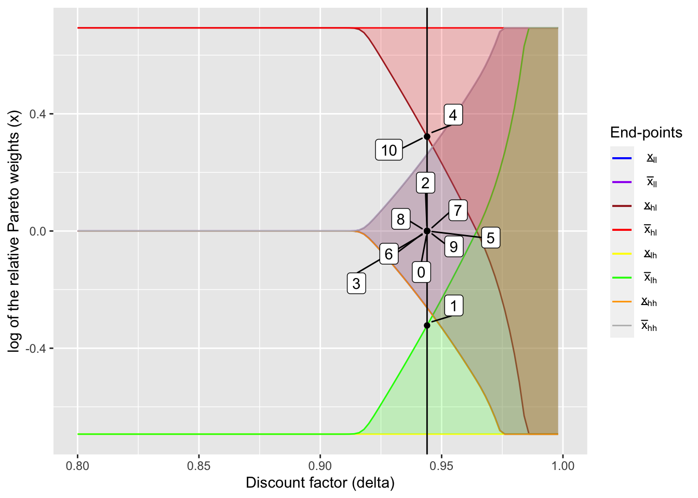

Numerical exercises of risk-sharing with limited commitment, mainly based on Ligon, Thomas, and Worrall (2002)
Mizuhiro Suzuki
10/21/2020
In this document, my goal is to explain how risk sharing occurs with limited commitment. For this, I mainly use the numerical exercise in Ligon, Thomas, and Worrall (2002) and how consumptino fluctuates in response to income shocks. Here I show how to compute the intervals of the relative Pareto weights, which fully characterize the evolution of consumption.
1 Risk sharing under dynamic limited commitment
Here I will discuss how risk sharing works under dynamic limited commitment as in Ligon, Thomas, and Worrall (2002). As Ligon, Thomas, and Worrall (2002), there are two households with log utility functions, and the income process, which is independent across households and time, is specified as follows:
\[ y_1 = [2/3, 4/3],\ y_2 = [2/3, 4/3], \\ \pi_1 = [0.1, 0.9],\ \pi_2 = [0.1, 0.9]. \]
As a result, we can replicate the Figure 1 of Ligon, Thomas, and Worrall (2002) (for detailed procedure, see the codes here.)
# Global settings ====================
sigma1 <- 1.0 # coefficient of relative risk aversion of HH1
sigma2 <- 1.0 # coefficient of relative risk aversion of HH2
pcphi <- 0.0 # punishment under autarky
# Define utility function
util <- function(c, sigma) {
if (sigma != 1) {
output = (c ^ (1 - sigma) - 1) / (1 - sigma)
} else if (sigma == 1) {
output = log(c)
}
return(output)
}
util_prime <- function(c, sigma) c ^ (- sigma)
# income shocks and their transition probabilities of the household
inc1 <- c(2/3, 4/3)
P1 <- matrix(rep(c(0.1, 0.9), 2), nrow = 2, byrow = TRUE)
# income shocks and their transition probabilities of the village
inc2 <- c(2/3, 4/3)
P2 <- matrix(rep(c(0.1, 0.9), 2), nrow = 2, byrow = TRUE)
# transition super-matrix of income shocks
R <- kronecker(P2, P1)
# number of states
# (number of income states for a household times
# number of income states for the village)
S <- length(inc1) * length(inc2)
# Income matrix
# (col 1: HH income, col 2: village income)
inc_mat <- as.matrix(expand.grid(inc1, inc2))
# Aggregate income in each state
inc_ag <- rowSums(inc_mat)
# Grid of time discount factors
delta_seq <- seq(0.8, 0.999, by = 0.002)output <- readRDS("RDSfiles/laczo2015_dynamic_lc_output.rds")# Plot figure =========================
x_int_array = array(NA, dim = c(S, 2, length(delta_seq)))
for (i in seq_along(delta_seq)) {
x_int_array[,,i] <- output[[i]][[5]]
}
dynamic_lc_plot <- ggplot() +
geom_line(aes(delta_seq, log(x_int_array[1,1,]), color = "a")) +
geom_line(aes(delta_seq, log(x_int_array[1,2,]), color = "b")) +
geom_line(aes(delta_seq, log(x_int_array[2,1,]), color = "c")) +
geom_line(aes(delta_seq, log(x_int_array[2,2,]), color = "d")) +
geom_line(aes(delta_seq, log(x_int_array[3,1,]), color = "e")) +
geom_line(aes(delta_seq, log(x_int_array[3,2,]), color = "f")) +
geom_line(aes(delta_seq, log(x_int_array[4,1,]), color = "g")) +
geom_line(aes(delta_seq, log(x_int_array[4,2,]), color = "h")) +
coord_cartesian(xlim = c(0.8, 1.0), ylim = c(log(inc1[1] / inc1[2]), log(inc1[2] / inc1[1]))) +
geom_ribbon(aes(x = delta_seq,
ymin = log(x_int_array[1,1,]),
ymax = log(x_int_array[1,2,])),
fill = "blue", alpha = 0.2) +
geom_ribbon(aes(x = delta_seq,
ymin = log(x_int_array[2,1,]),
ymax = log(x_int_array[2,2,])),
fill = "red", alpha = 0.2) +
geom_ribbon(aes(x = delta_seq,
ymin = log(x_int_array[3,1,]),
ymax = log(x_int_array[3,2,])),
fill = "green", alpha = 0.2) +
geom_ribbon(aes(x = delta_seq,
ymin = log(x_int_array[4,1,]),
ymax = log(x_int_array[4,2,])),
fill = "yellow", alpha = 0.2) +
scale_color_manual(
name = "End-points",
values = c(
"blue",
"purple",
"brown",
"red",
"yellow",
"green",
"orange",
"gray"
),
labels = unname(TeX(c(
"$\\underline{x}_{ll}$",
"$\\bar{x}_{ll}$",
"$\\underline{x}_{hl}$",
"$\\bar{x}_{hl}$",
"$\\underline{x}_{lh}$",
"$\\bar{x}_{lh}$",
"$\\underline{x}_{hh}$",
"$\\bar{x}_{hh}$"
)))
) +
xlab("Discount factor (delta)") +
ylab("log of the relative Pareto weights (x)")
dynamic_lc_plotHere I generate random income shocks, based on the income process specified above. I consider 10-period data.
n <- 10
set.seed(35)
# Sequence of income shocks
income_realization <- c(1, 2, 3, 4)
income_realization_label <- c("Low, Low", "High, Low", "Low, High", "High, High")
income_seq <- sample(income_realization,
size = n,
replace = TRUE,
prob = R[1,])
inc1_realization <- inc_mat[income_seq, 1]
inc2_realization <- inc_mat[income_seq, 2]
(income_realization_vec <- income_realization_label[income_seq])## [1] "Low, High" "High, High" "High, High" "High, Low" "High, High" "High, High" "High, High" "High, High" "Low, Low"
## [10] "High, Low"This is the function to create summary tables and figures later:
# Function to create output and figure ================
create_plot_table <- function(delta_ind, lc_plot, x_int_array, dynamic = TRUE) {
delta <- delta_seq[delta_ind]
# Vector of relative Pareto weights
x_vec <- rep(NA, n + 1)
x_vec[1] <- 1
x_int_array_aut <- x_int_array[,,delta_ind]
# Relative Pareto weights on the history of income realizations
if (dynamic == TRUE) {
for (t in seq(n)) {
x_int_temp <- x_int_array_aut[income_seq[t],]
if (x_vec[t] < x_int_temp[1]) {
x_vec[t + 1] <- x_int_temp[1]
} else if (x_vec[t] > x_int_temp[2]) {
x_vec[t + 1] <- x_int_temp[2]
} else {
x_vec[t + 1] <- x_vec[t]
}
}
} else {
for (t in seq(n)) {
x_int_temp <- x_int_array_aut[income_seq[t],]
if (x_vec[1] < x_int_temp[1]) {
x_vec[t + 1] <- x_int_temp[1]
} else if (x_vec[1] > x_int_temp[2]) {
x_vec[t + 1] <- x_int_temp[2]
} else {
x_vec[t + 1] <- x_vec[1]
}
}
}
# Consumption and transfers, calculated based on x_vec
cons1_vec <- rep(NA, n + 1)
cons2_vec <- rep(NA, n + 1)
transfer_1_to_2 <- rep(NA, n + 1)
for (t in seq(2, n + 1)) {
f <- function(w) util_prime(inc_ag[income_seq[t - 1]] - w, sigma2) / util_prime(w, sigma1) - x_vec[t]
cons1_vec[t] <- uniroot(f, c(1e-6, (inc_ag[income_seq[t - 1]] - 1e-6)), tol = 1e-10, maxiter = 300)$root
cons2_vec[t] <- inc_ag[income_seq[t - 1]] - cons1_vec[t]
transfer_1_to_2[t] <- inc_mat[income_seq[t - 1], 1] - cons1_vec[t]
}
# Output table
table_output <- tibble(
`Period` = seq(0, n),
`ln(x)` = log(x_vec),
`Income shocks` = c(NA, income_realization_vec),
`Net transfer (1 -> 2)` = transfer_1_to_2,
`Consumption (1)` = cons1_vec,
`Consumption (2)` = cons2_vec,
`Income (1)` = c(NA, inc1_realization),
`Income (2)` = c(NA, inc2_realization)
)
# Output figure
plot_output <- lc_plot +
geom_vline(xintercept = delta) +
geom_point(aes(rep(delta, n + 1), log(x_vec))) +
geom_label_repel(
aes(rep(delta, n + 1), log(x_vec)), label = seq(0, n),
box.padding = 0.35, point.padding = 0.5
)
# Table of mean and SD of consumption and income
sum_table_output <- table_output %>%
select(
c(
"Consumption (1)",
"Consumption (2)",
"Income (1)",
"Income (2)"
)
) %>%
summarise_all(
list(
mean = function(x) mean(x, na.rm = TRUE),
sd = function(x) sd(x, na.rm = TRUE)
)
) %>%
pivot_longer(everything(), names_to = "variable", values_to = "value") %>%
extract(variable, c("variable", "stat"),
regex = "(.*)(_mean|_sd)") %>%
pivot_wider(names_from = "stat", values_from = "value")
colnames(sum_table_output) <- c("", "Mean", "SD")
return(list(table_output, plot_output, sum_table_output))
}Below I consider risk-sharing in 4 different regions in turn by discount factor \(\delta\): autarky region, non-overlapping region, overlapping region, and first-best region.
1.1 Case 1: Autarky region
Here I consider the autarky region, where no risk-sharing occurs.
delta_ind <- 15
(delta_aut <- delta_seq[delta_ind])## [1] 0.828output_aut <- create_plot_table(delta_ind, dynamic_lc_plot, x_int_array)table_aut <- output_aut[[1]]
kable(table_aut, digits = 3)| Period | ln(x) | Income shocks | Net transfer (1 -> 2) | Consumption (1) | Consumption (2) | Income (1) | Income (2) |
|---|---|---|---|---|---|---|---|
| 0 | 0.000 | NA | NA | NA | NA | NA | NA |
| 1 | -0.693 | Low, High | 0 | 0.667 | 1.333 | 0.667 | 1.333 |
| 2 | 0.000 | High, High | 0 | 1.333 | 1.333 | 1.333 | 1.333 |
| 3 | 0.000 | High, High | 0 | 1.333 | 1.333 | 1.333 | 1.333 |
| 4 | 0.693 | High, Low | 0 | 1.333 | 0.667 | 1.333 | 0.667 |
| 5 | 0.000 | High, High | 0 | 1.333 | 1.333 | 1.333 | 1.333 |
| 6 | 0.000 | High, High | 0 | 1.333 | 1.333 | 1.333 | 1.333 |
| 7 | 0.000 | High, High | 0 | 1.333 | 1.333 | 1.333 | 1.333 |
| 8 | 0.000 | High, High | 0 | 1.333 | 1.333 | 1.333 | 1.333 |
| 9 | 0.000 | Low, Low | 0 | 0.667 | 0.667 | 0.667 | 0.667 |
| 10 | 0.693 | High, Low | 0 | 1.333 | 0.667 | 1.333 | 0.667 |
output_aut[[2]]kable(output_aut[[3]], digits = 3)| Mean | SD | |
|---|---|---|
| Consumption (1) | 1.200 | 0.281 |
| Consumption (2) | 1.133 | 0.322 |
| Income (1) | 1.200 | 0.281 |
| Income (2) | 1.133 | 0.322 |
As you can see from the table and figure, there is no transfer between households (ie. consumption and income perfectly covary) and the ratio of marginal utilities fluctuates a lot in response to income shocks.
1.2 Case 2: Non-overlapping region
Now, I try and see the transition in the ratio of marginal utilities and consumptions in the non-overlapping region.
delta_ind <- 50
(delta_non_ol <- delta_seq[delta_ind])## [1] 0.898output_non_ol <- create_plot_table(delta_ind, dynamic_lc_plot, x_int_array)table_non_ol <- output_non_ol[[1]]
kable(table_non_ol, digits = 3)| Period | ln(x) | Income shocks | Net transfer (1 -> 2) | Consumption (1) | Consumption (2) | Income (1) | Income (2) |
|---|---|---|---|---|---|---|---|
| 0 | 0.000 | NA | NA | NA | NA | NA | NA |
| 1 | -0.414 | Low, High | -0.129 | 0.796 | 1.204 | 0.667 | 1.333 |
| 2 | -0.031 | High, High | 0.021 | 1.313 | 1.354 | 1.333 | 1.333 |
| 3 | -0.031 | High, High | 0.021 | 1.313 | 1.354 | 1.333 | 1.333 |
| 4 | 0.414 | High, Low | 0.129 | 1.204 | 0.796 | 1.333 | 0.667 |
| 5 | 0.032 | High, High | -0.021 | 1.355 | 1.312 | 1.333 | 1.333 |
| 6 | 0.032 | High, High | -0.021 | 1.355 | 1.312 | 1.333 | 1.333 |
| 7 | 0.032 | High, High | -0.021 | 1.355 | 1.312 | 1.333 | 1.333 |
| 8 | 0.032 | High, High | -0.021 | 1.355 | 1.312 | 1.333 | 1.333 |
| 9 | 0.032 | Low, Low | -0.011 | 0.677 | 0.656 | 0.667 | 0.667 |
| 10 | 0.414 | High, Low | 0.129 | 1.204 | 0.796 | 1.333 | 0.667 |
output_non_ol[[2]]It is interesting to see the path dependence of transfers: after HH 1 receives a bad shock in period 1, a household keeps to “repay the loan” by transferring to HH 2 even when the realized incomes are the same (periods 2 and 3), until the other household receives a bad shock and she herself receives a good shock (period 4).
Also, the table below shows that, while mean consumptions are similar to mean incomes, the fluctuation in consumptions are smaller than that of incomes. This is the benefit of risk sharing, although full insurance is not achieved since the relative Pareto weights fluctuates over time.
kable(output_non_ol[[3]], digits = 3)| Mean | SD | |
|---|---|---|
| Consumption (1) | 1.193 | 0.249 |
| Consumption (2) | 1.141 | 0.276 |
| Income (1) | 1.200 | 0.281 |
| Income (2) | 1.133 | 0.322 |
1.3 Case 3: Overlapping region
Next, I look at how the relative Pareto weights change over time in the overlapping region:
delta_ind <- 73
(delta_ol <- delta_seq[delta_ind])## [1] 0.944output_ol <- create_plot_table(delta_ind, dynamic_lc_plot, x_int_array)table_ol <- output_ol[[1]]
kable(table_ol, digits = 3)| Period | ln(x) | Income shocks | Net transfer (1 -> 2) | Consumption (1) | Consumption (2) | Income (1) | Income (2) |
|---|---|---|---|---|---|---|---|
| 0 | 0.000 | NA | NA | NA | NA | NA | NA |
| 1 | -0.052 | Low, High | -0.308 | 0.974 | 1.026 | 0.667 | 1.333 |
| 2 | -0.052 | High, High | 0.034 | 1.299 | 1.368 | 1.333 | 1.333 |
| 3 | -0.052 | High, High | 0.034 | 1.299 | 1.368 | 1.333 | 1.333 |
| 4 | 0.052 | High, Low | 0.307 | 1.026 | 0.974 | 1.333 | 0.667 |
| 5 | 0.052 | High, High | -0.035 | 1.368 | 1.299 | 1.333 | 1.333 |
| 6 | 0.052 | High, High | -0.035 | 1.368 | 1.299 | 1.333 | 1.333 |
| 7 | 0.052 | High, High | -0.035 | 1.368 | 1.299 | 1.333 | 1.333 |
| 8 | 0.052 | High, High | -0.035 | 1.368 | 1.299 | 1.333 | 1.333 |
| 9 | 0.052 | Low, Low | -0.017 | 0.684 | 0.649 | 0.667 | 0.667 |
| 10 | 0.052 | High, Low | 0.307 | 1.026 | 0.974 | 1.333 | 0.667 |
output_ol[[2]]Compared to the previous case, the fluctuation in the ratio of marginal utilities is smaller. This results in less fluctuating consumption as the table below shows:
kable(output_ol[[3]], digits = 3)| Mean | SD | |
|---|---|---|
| Consumption (1) | 1.178 | 0.237 |
| Consumption (2) | 1.155 | 0.238 |
| Income (1) | 1.200 | 0.281 |
| Income (2) | 1.133 | 0.322 |
1.4 Case 4: First-best region
Finally, I try to see the transitions in the first-best region.
delta_ind <- 99
(delta_fb <- delta_seq[delta_ind])## [1] 0.996output_fb <- create_plot_table(delta_ind, dynamic_lc_plot, x_int_array)table_fb <- output_fb[[1]]
kable(table_fb, digits = 3)| Period | ln(x) | Income shocks | Net transfer (1 -> 2) | Consumption (1) | Consumption (2) | Income (1) | Income (2) |
|---|---|---|---|---|---|---|---|
| 0 | 0 | NA | NA | NA | NA | NA | NA |
| 1 | 0 | Low, High | -0.333 | 1.000 | 1.000 | 0.667 | 1.333 |
| 2 | 0 | High, High | 0.000 | 1.333 | 1.333 | 1.333 | 1.333 |
| 3 | 0 | High, High | 0.000 | 1.333 | 1.333 | 1.333 | 1.333 |
| 4 | 0 | High, Low | 0.333 | 1.000 | 1.000 | 1.333 | 0.667 |
| 5 | 0 | High, High | 0.000 | 1.333 | 1.333 | 1.333 | 1.333 |
| 6 | 0 | High, High | 0.000 | 1.333 | 1.333 | 1.333 | 1.333 |
| 7 | 0 | High, High | 0.000 | 1.333 | 1.333 | 1.333 | 1.333 |
| 8 | 0 | High, High | 0.000 | 1.333 | 1.333 | 1.333 | 1.333 |
| 9 | 0 | Low, Low | 0.000 | 0.667 | 0.667 | 0.667 | 0.667 |
| 10 | 0 | High, Low | 0.333 | 1.000 | 1.000 | 1.333 | 0.667 |
output_fb[[2]]
As the name of the region suggests, the ratio of marginal utilities stays at the initial position and never changes. This means that full insurance is achieved, although due to the aggregate shocks consumptions fluctuate as the table shows:
kable(output_fb[[3]], digits = 3)| Mean | SD | |
|---|---|---|
| Consumption (1) | 1.167 | 0.236 |
| Consumption (2) | 1.167 | 0.236 |
| Income (1) | 1.200 | 0.281 |
| Income (2) | 1.133 | 0.322 |
2 Comparison with static limited commitment model (Coate & Ravallion (1993))
Here I compare how different risk-sharing schemes under dynamic limited commitment (Ligon, Thomas, and Worrall (2002)) and static limited commitment (Coate and Ravallion (1993)). I show the similar figure to the one in Ligon, Thomas, and Worrall (2002), but under static limited commitment. See here for the code to generate this figure.
In static limited commitment model, transfers do not depend on the history of states but only on the current state. Presumably this restricts the range of transfer contracts and thus weakens the performance of risk sharing. I try to see this numerically.
static_output <- readRDS("RDSfiles/laczo2015_static_lc_output.rds")static_x_int_array = array(NA, dim = c(S, 2, length(delta_seq)))
for (i in seq_along(delta_seq)) {
static_x_int_array[,,i] <- static_output[[i]][[5]]
}
static_lc_plot <- ggplot() +
geom_line(aes(delta_seq, log(static_x_int_array[1,1,]), color = "a")) +
geom_line(aes(delta_seq, log(static_x_int_array[1,2,]), color = "b")) +
geom_line(aes(delta_seq, log(static_x_int_array[2,1,]), color = "c")) +
geom_line(aes(delta_seq, log(static_x_int_array[2,2,]), color = "d")) +
geom_line(aes(delta_seq, log(static_x_int_array[3,1,]), color = "e")) +
geom_line(aes(delta_seq, log(static_x_int_array[3,2,]), color = "f")) +
geom_line(aes(delta_seq, log(static_x_int_array[4,1,]), color = "g")) +
geom_line(aes(delta_seq, log(static_x_int_array[4,2,]), color = "h")) +
coord_cartesian(xlim = c(0.8, 1.0), ylim = c(log(inc1[1] / inc1[2]), log(inc1[2] / inc1[1]))) +
geom_ribbon(aes(x = delta_seq,
ymin = log(static_x_int_array[1,1,]),
ymax = log(static_x_int_array[1,2,])),
fill = "blue", alpha = 0.2) +
geom_ribbon(aes(x = delta_seq,
ymin = log(static_x_int_array[2,1,]),
ymax = log(static_x_int_array[2,2,])),
fill = "red", alpha = 0.2) +
geom_ribbon(aes(x = delta_seq,
ymin = log(static_x_int_array[3,1,]),
ymax = log(static_x_int_array[3,2,])),
fill = "green", alpha = 0.2) +
geom_ribbon(aes(x = delta_seq,
ymin = log(static_x_int_array[4,1,]),
ymax = log(static_x_int_array[4,2,])),
fill = "orange", alpha = 0.2) +
scale_color_manual(
name = "End-points",
values = c(
"blue",
"purple",
"brown",
"red",
"yellow",
"green",
"orange",
"gray"
),
labels = unname(TeX(c(
"$\\underline{x}_{ll}$",
"$\\bar{x}_{ll}$",
"$\\underline{x}_{hl}$",
"$\\bar{x}_{hl}$",
"$\\underline{x}_{lh}$",
"$\\bar{x}_{lh}$",
"$\\underline{x}_{hh}$",
"$\\bar{x}_{hh}$"
)))
) +
xlab("Discount factor (delta)") +
ylab("log of the relative Pareto weights (x)")
static_lc_plot
Given this figure, I compare how transition of the relative Pareto weights differ between two models. As the value of \(\delta\), I use the same value as the one used for the overlapping case above.
delta_ind <- 73
(delta_static <- delta_seq[delta_ind])## [1] 0.944output_static <- create_plot_table(
delta_ind, static_lc_plot,
static_x_int_array, dynamic = FALSE
)table_static <- output_static[[1]]
kable(table_static, digits = 3)| Period | ln(x) | Income shocks | Net transfer (1 -> 2) | Consumption (1) | Consumption (2) | Income (1) | Income (2) |
|---|---|---|---|---|---|---|---|
| 0 | 0.000 | NA | NA | NA | NA | NA | NA |
| 1 | -0.322 | Low, High | -0.174 | 0.840 | 1.160 | 0.667 | 1.333 |
| 2 | 0.000 | High, High | 0.000 | 1.333 | 1.333 | 1.333 | 1.333 |
| 3 | 0.000 | High, High | 0.000 | 1.333 | 1.333 | 1.333 | 1.333 |
| 4 | 0.322 | High, Low | 0.174 | 1.160 | 0.840 | 1.333 | 0.667 |
| 5 | 0.000 | High, High | 0.000 | 1.333 | 1.333 | 1.333 | 1.333 |
| 6 | 0.000 | High, High | 0.000 | 1.333 | 1.333 | 1.333 | 1.333 |
| 7 | 0.000 | High, High | 0.000 | 1.333 | 1.333 | 1.333 | 1.333 |
| 8 | 0.000 | High, High | 0.000 | 1.333 | 1.333 | 1.333 | 1.333 |
| 9 | 0.000 | Low, Low | 0.000 | 0.667 | 0.667 | 0.667 | 0.667 |
| 10 | 0.322 | High, Low | 0.174 | 1.160 | 0.840 | 1.333 | 0.667 |
output_static[[2]]
kable(output_static[[3]], digits = 3)| Mean | SD | |
|---|---|---|
| Consumption (1) | 1.183 | 0.241 |
| Consumption (2) | 1.151 | 0.264 |
| Income (1) | 1.200 | 0.281 |
| Income (2) | 1.133 | 0.322 |
There are several things that should be noted. First, in the static limited commitment model, the payment is not path dependence: only current income matters for transfers. Second, in the static model, when possible, the marginal utilities are back to the initial value, \(1\) (note that \(\log(1) = 0\)). While this appears to be a nice thing, this comes at the cost of larger fluctuation of \(x\). This results in more fluctuating consumptions as shown in the table below.
compare_table <- left_join(output_ol[[3]], output_static[[3]], by = "")
colnames(compare_table) <- c("", "Mean (DLC)", "SD (DLC)", "Mean (SLC)", "SD (SLC)")
kable(
compare_table, digits = 3,
caption = "Comparison between dynamic limited commitment (DLC) model and static limited commitment (SLC) model"
)| Mean (DLC) | SD (DLC) | Mean (SLC) | SD (SLC) | |
|---|---|---|---|---|
| Consumption (1) | 1.178 | 0.237 | 1.183 | 0.241 |
| Consumption (2) | 1.155 | 0.238 | 1.151 | 0.264 |
| Income (1) | 1.200 | 0.281 | 1.200 | 0.281 |
| Income (2) | 1.133 | 0.322 | 1.133 | 0.322 |
References
Coate, Stephen, and Martin Ravallion. 1993. “Reciprocity without commitment: Characterization and performance of informal insurance arrangements.” Journal of Development Economics 40 (1): 1–24. https://doi.org/10.1016/0304-3878(93)90102-S.
Ligon, Ethan, Jonathan P. Thomas, and Tim Worrall. 2002. “Informal Insurance Arrangements with Limited Commitment: Theory and Evidence from Village Economies.” Review of Economic Studies 69 (1): 209–44. https://doi.org/10.1111/1467-937X.00204.